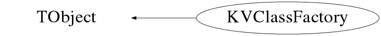

class KVClassFactory: public TObject
Factory class for generating skeleton files for new classes.
It can generate basic '.h' and '.cpp' files for
- base classes (base_class="")
- inherited classes (base_class!="")
- classes based on template files
There are two ways to use KVClassFactory in order to generate code:
1. Using the static (stand-alone) method
KVClassFactory::MakeClass(classname, classdesc, base_class, withTemplate, templateFile);
2. Create and configure a KVClassFactory object and then call the GenerateCode() method:
KVClassFactory fact(classname, classdesc, base_class, withTemplate, templateFile);
fact.GenerateCode();
The second method is more flexible and allows to add methods to classes before
code generation, even if the class is created from a predefined template.
For example, let us suppose that we want to add the following method to our class:
declaration:
virtual const Char_t* GetName(Option_t* = "") const;
implementation:
const Char_t* MyNewClass::GetName(Option_t* opt) const
{
//A new method
if( strcmp(opt,"") ) cout << "Option : " << opt << endl;
else cout << fName.Data() << endl;
return fName.Data();
}
This can be done as follows:
fact.AddMethod("GetName", "const Char_t*", kTRUE, kTRUE);
fact.AddMethodArgument("GetName", "Option_t*", "opt", "\"\"");
KVString body;
body += " //A new method\n";
body += " if( strcmp(opt,\"\") ) cout << \"Option : \" << opt << endl;\n";
body += " else cout << fName.Data() << endl;\n";
body += " return fName.Data();";
fact.AddMethodBody("GetName", body);
The addition of a new method may mean that it is necessary to add an '#include'
directive to either the header or the implementation file of the new class. For example,
in this case, the use of 'cout', 'endl' etc. may require to add an '#include "Riostream.h"'
to the '.cpp' file of the new class. This can be done as follows:
fact.AddImplIncludeFile("Riostream.h");
For another example of this kind of approach, see the method KVParticleCondition::Optimize.
Function Members (Methods)
public:
| KVClassFactory() | |
| KVClassFactory(const KVClassFactory&) | |
| KVClassFactory(const Char_t* classname, const Char_t* classdesc, const Char_t* base_class = "", Bool_t withTemplate = kFALSE, const Char_t* templateFile = "") | |
| virtual | ~KVClassFactory() |
| void | TObject::AbstractMethod(const char* method) const |
| void | AddAllBaseConstructors() |
| KVClassMethod* | AddConstructor(const Char_t* argument_type, const Char_t* argument_name = "", const Char_t* default_value = "", const Char_t* access = "public") |
| void | AddGetSetMethods(const KVNameValueList&) |
| void | AddHeaderIncludeFile(const Char_t* filename) |
| void | AddImplIncludeFile(const Char_t* filename) |
| KVClassMember* | AddMember(const Char_t* name, const Char_t* type, const Char_t* comment, const Char_t* access = "protected") |
| void | AddMethod(const KVClassMethod& kvcm) |
| KVClassMethod* | AddMethod(const Char_t* name, const Char_t* return_type, const Char_t* access = "public", Bool_t isVirtual = kFALSE, Bool_t isConst = kFALSE) |
| void | AddMethodArgument(const Char_t* method_name, const Char_t* argument_type, const Char_t* argument_name = "", const Char_t* default_value = "") |
| void | AddMethodBody(const Char_t* method_name, KVString& body) |
| virtual void | TObject::AppendPad(Option_t* option = "") |
| virtual void | TObject::Browse(TBrowser* b) |
| static TClass* | Class() |
| virtual const char* | TObject::ClassName() const |
| virtual void | TObject::Clear(Option_t* = "") |
| virtual TObject* | TObject::Clone(const char* newname = "") const |
| virtual Int_t | TObject::Compare(const TObject* obj) const |
| virtual void | Copy(TObject& obj) const |
| virtual void | TObject::Delete(Option_t* option = "")MENU |
| virtual Int_t | TObject::DistancetoPrimitive(Int_t px, Int_t py) |
| virtual void | TObject::Draw(Option_t* option = "") |
| virtual void | TObject::DrawClass() constMENU |
| virtual TObject* | TObject::DrawClone(Option_t* option = "") constMENU |
| virtual void | TObject::Dump() constMENU |
| virtual void | TObject::Error(const char* method, const char* msgfmt) const |
| virtual void | TObject::Execute(const char* method, const char* params, Int_t* error = 0) |
| virtual void | TObject::Execute(TMethod* method, TObjArray* params, Int_t* error = 0) |
| virtual void | TObject::ExecuteEvent(Int_t event, Int_t px, Int_t py) |
| virtual void | TObject::Fatal(const char* method, const char* msgfmt) const |
| virtual TObject* | TObject::FindObject(const char* name) const |
| virtual TObject* | TObject::FindObject(const TObject* obj) const |
| void | GenerateCode() |
| const Char_t* | GetBaseClass() const |
| const Char_t* | GetClassDesc() const |
| const Char_t* | GetClassName() const |
| virtual Option_t* | TObject::GetDrawOption() const |
| static Long_t | TObject::GetDtorOnly() |
| const Char_t* | GetHeaderFileName() const |
| virtual const char* | TObject::GetIconName() const |
| const Char_t* | GetImpFileName() const |
| const KVList* | GetListOfMethods() |
| virtual const char* | TObject::GetName() const |
| virtual char* | TObject::GetObjectInfo(Int_t px, Int_t py) const |
| static Bool_t | TObject::GetObjectStat() |
| virtual Option_t* | TObject::GetOption() const |
| const Char_t* | GetTemplateBase() const |
| virtual const char* | TObject::GetTitle() const |
| virtual UInt_t | TObject::GetUniqueID() const |
| virtual Bool_t | TObject::HandleTimer(TTimer* timer) |
| virtual ULong_t | TObject::Hash() const |
| virtual void | TObject::Info(const char* method, const char* msgfmt) const |
| virtual Bool_t | TObject::InheritsFrom(const char* classname) const |
| virtual Bool_t | TObject::InheritsFrom(const TClass* cl) const |
| virtual void | TObject::Inspect() constMENU |
| void | TObject::InvertBit(UInt_t f) |
| virtual TClass* | IsA() const |
| virtual Bool_t | TObject::IsEqual(const TObject* obj) const |
| virtual Bool_t | TObject::IsFolder() const |
| Bool_t | TObject::IsOnHeap() const |
| virtual Bool_t | TObject::IsSortable() const |
| Bool_t | TObject::IsZombie() const |
| virtual void | TObject::ls(Option_t* option = "") const |
| static void | MakeClass(const Char_t* classname, const Char_t* classdesc, const Char_t* base_class = "", Bool_t withTemplate = kFALSE, const Char_t* templateFile = "") |
| void | TObject::MayNotUse(const char* method) const |
| virtual Bool_t | TObject::Notify() |
| void | TObject::Obsolete(const char* method, const char* asOfVers, const char* removedFromVers) const |
| static void | TObject::operator delete(void* ptr) |
| static void | TObject::operator delete(void* ptr, void* vp) |
| static void | TObject::operator delete[](void* ptr) |
| static void | TObject::operator delete[](void* ptr, void* vp) |
| void* | TObject::operator new(size_t sz) |
| void* | TObject::operator new(size_t sz, void* vp) |
| void* | TObject::operator new[](size_t sz) |
| void* | TObject::operator new[](size_t sz, void* vp) |
| TObject& | TObject::operator=(const TObject& rhs) |
| virtual void | TObject::Paint(Option_t* option = "") |
| virtual void | TObject::Pop() |
| virtual void | Print(Option_t* opt = "") const |
| virtual Int_t | TObject::Read(const char* name) |
| virtual void | TObject::RecursiveRemove(TObject* obj) |
| void | TObject::ResetBit(UInt_t f) |
| virtual void | TObject::SaveAs(const char* filename = "", Option_t* option = "") constMENU |
| virtual void | TObject::SavePrimitive(ostream& out, Option_t* option = "") |
| void | SetBaseClass(const Char_t* b) |
| void | TObject::SetBit(UInt_t f) |
| void | TObject::SetBit(UInt_t f, Bool_t set) |
| void | SetClassDesc(const Char_t* d) |
| void | SetClassName(const Char_t* n) |
| virtual void | TObject::SetDrawOption(Option_t* option = "")MENU |
| static void | TObject::SetDtorOnly(void* obj) |
| static void | TObject::SetObjectStat(Bool_t stat) |
| void | SetTemplate(Bool_t temp, const Char_t* temp_file) |
| virtual void | TObject::SetUniqueID(UInt_t uid) |
| virtual void | ShowMembers(TMemberInspector&) |
| virtual void | Streamer(TBuffer&) |
| void | StreamerNVirtual(TBuffer& ClassDef_StreamerNVirtual_b) |
| virtual void | TObject::SysError(const char* method, const char* msgfmt) const |
| Bool_t | TObject::TestBit(UInt_t f) const |
| Int_t | TObject::TestBits(UInt_t f) const |
| virtual void | TObject::UseCurrentStyle() |
| virtual void | TObject::Warning(const char* method, const char* msgfmt) const |
| Bool_t | WithMultipleBaseClasses() const |
| Bool_t | WithTemplate() const |
| virtual Int_t | TObject::Write(const char* name = 0, Int_t option = 0, Int_t bufsize = 0) |
| virtual Int_t | TObject::Write(const char* name = 0, Int_t option = 0, Int_t bufsize = 0) const |
protected:
| void | AddCopyConstructor(Bool_t withTObjectCopy = kFALSE) |
| void | AddTObjectCopyMethod() |
| Bool_t | CheckTemplateFiles(const Char_t* base_class, const Char_t* templateFile) |
| virtual void | TObject::DoError(int level, const char* location, const char* fmt, va_list va) const |
| Ssiz_t | FindNextUncommentedLine(TString&, Ssiz_t beg = 0) |
| void | TObject::MakeZombie() |
| void | SetWhoWhen() |
| void | WriteClassDec(ofstream&) |
| void | WriteClassHeader() |
| void | WriteClassImp() |
| void | WriteClassWithTemplateHeader() |
| void | WriteClassWithTemplateImp() |
| void | WriteCVSTags(ofstream&) |
| void | WritePreProc(ofstream&) |
| void | WriteWhoWhen(ofstream&) |
Data Members
public:
| enum TObject::EStatusBits { | kCanDelete | |
| kMustCleanup | ||
| kObjInCanvas | ||
| kIsReferenced | ||
| kHasUUID | ||
| kCannotPick | ||
| kNoContextMenu | ||
| kInvalidObject | ||
| }; | ||
| enum TObject::[unnamed] { | kIsOnHeap | |
| kNotDeleted | ||
| kZombie | ||
| kBitMask | ||
| kSingleKey | ||
| kOverwrite | ||
| kWriteDelete | ||
| }; |
private:
| KVString | fAuthor | user who called ClassFactory to generate class |
| TClass* | fBaseClass | ! description of base class |
| KVString | fBaseClassName | name of base class |
| Bool_t | fBaseClassTObject | kTRUE if class derived from TObject |
| KVString | fClassDesc | class description |
| KVString | fClassName | name of class to generate |
| Bool_t | fHasBaseClass | kTRUE if class derived from another |
| KVList | fHeadInc | list of 'includes' to be added to header file |
| KVList | fImpInc | list of 'includes' to be added to implementation file |
| KVList | fMembers | list of member variables for class |
| KVList | fMethods | list of methods added to class |
| TDatime | fNow | for dating files |
| KVString | fTemplateBase | template base name passed to SetTemplate method |
| KVString | fTemplateCPP | full path to template .cpp |
| KVString | fTemplateClassName | name of template dummy class |
| KVString | fTemplateH | full path to template .h |
| Bool_t | fWithTemplate | true if class has a template |
Class Charts
{kind=link}
{kind=link}
{kind=link}
{kind=link}

Function documentation
KVClassFactory(const Char_t* classname, const Char_t* classdesc, const Char_t* base_class = "", Bool_t withTemplate = kFALSE, const Char_t* templateFile = "")
Create a new class with the following characteristics: classname = name of new class classdesc = short (one line) description of class base_class = name of base class(es)* (if creating a derived class) withTemplate = kTRUE if template files for the '.h' and '.cpp' are to be used templateFile = base name of template files *(if the class has several base classes, give a comma-separated list) Only classname and classdesc have to be given. By default we create a new base class without use of template files. If withTemplate=kTRUE, the base name for the template files must be given. We check that the template files exist. If they do not, an error message is printed and this object will be made a zombie (test IsZombie() after constructor). The template for the class structure is defined in a '.h' and a '.cpp' file, as follows: if templateFile="" (default), we expect base_class!="", and template files with names base_classTemplate.h and base_classTemplate.cpp must be present in either $KVROOT/KVFiles, $HOME or $PWD directories. the dummy classname "base_classTemplate" will be replaced everywhere by 'classname' if templateFile="/absolute/path/classTemplate" we use classTemplate.h & classTemplate.cpp in the given directory. the dummy classname "classTemplate" will be replaced everywhere by 'classname' if templateFile="classTemplate" we look for classTemplate.h & classTemplate.cpp in $KVROOT/KVFiles, $HOME or $PWD directories. the dummy classname "classTemplate" will be replaced everywhere by 'classname'
void SetTemplate(Bool_t temp, const Char_t* temp_file)
If the class uses template files (temp=kTRUE), 'templateFile' is the base name used to find these files. The template for the class structure is defined in a '.h' and a '.cpp' file, as follows: if templateFile="" (default), we expect a base class to have been given, and template files with names base_classTemplate.h and base_classTemplate.cpp must be present in either $KVROOT/KVFiles, $HOME or $PWD directories. the dummy classname "base_classTemplate" will be replaced everywhere by 'classname' if templateFile="/absolute/path/classTemplate" we use classTemplate.h & classTemplate.cpp in the given directory. the dummy classname "classTemplate" will be replaced everywhere by 'classname' if templateFile="classTemplate" we look for classTemplate.h & classTemplate.cpp in $KVROOT/KVFiles, $HOME or $PWD directories. the dummy classname "classTemplate" will be replaced everywhere by 'classname'
void WritePreProc(ofstream& )
Write pre-processor directives in file i.e. '#ifndef __TOTO_H' etc. If this class has inheritance, we add '#include "base_class.h"' for each of the base classes. and any other include files added using AddHeaderIncludeFile
void WriteClassDec(ofstream& )
void WriteClassImp()
Write the class implementation file This includes a class description in pure HTML
void MakeClass(const Char_t* classname, const Char_t* classdesc, const Char_t* base_class = "", Bool_t withTemplate = kFALSE, const Char_t* templateFile = "")
Static method for generating skeleton header and implementation files for a new class. Give a name for the class and a short description, used for HTML doc. The optional string 'base_class' gives the name(s) of the parent class(es)*, in case of inheritance; if not given, the new class will be a base class. *(in case of several base classes, give a comma-separated list) if withTemplate=kTRUE, we use a template for the class structure, defined in a '.h' and a '.cpp' file, as follows: if templateFile="" (default), we expect base_class!="", and template files with names base_classTemplate.h and base_classTemplate.cpp must be present in either $KVROOT/KVFiles, $HOME or $PWD directories. the dummy classname "base_classTemplate" will be replaced everywhere by 'classname' if templateFile="/absolute/path/classTemplate" we use classTemplate.h & classTemplate.cpp in the given directory. the dummy classname "classTemplate" will be replaced everywhere by 'classname' if templateFile="classTemplate" we look for classTemplate.h & classTemplate.cpp in $KVROOT/KVFiles, $HOME or $PWD directories. the dummy classname "classTemplate" will be replaced everywhere by 'classname' Example of use: KVClassFactory::MakeClass("MyClass", "A brand new class", "TObject") will generate the following MyClass.h and MyClass.cpp files: MyClass.h ======================================>>>> //Created by KVClassFactory on Fri Mar 24 23:52:54 2006 (<-------creation date) //Author: John Frankland (<----- full name of user who calls MakeClass method) #ifndef __MYCLASS_H #define __MYCLASS_H #include <TObject.h> (<----- header file for parent class, if necessary) class MyClass : public TObject { public: MyClass(); virtual ~MyClass(); ClassDef(MyClass,1)//A brand new class (<------- class description) }; #endif <<<<<<<=========================================== MyClass.cpp=================================>>>>>>> //Created by KVClassFactory on Fri Mar 24 23:52:54 2006 //Author: John Frankland (<----- full name of user who calls MakeClass method) #include "MyClass.h" ClassImp(MyClass) // A brand new class (<------- class description) MyClass::MyClass() { //Default constructor } MyClass::~MyClass() { //Destructor }
KVClassMember* AddMember(const Char_t* name, const Char_t* type, const Char_t* comment, const Char_t* access = "protected")
Add a member variable to the class, with name 'f[name]' according to ROOT convention.
The access type is by default "protected", in accordance with OO-encapsulation.
void SetWhoWhen()
Set date, time and user name based on current environment If available, we use the full name of the current user, otherwise we use the login name.
Ssiz_t FindNextUncommentedLine(TString& , Ssiz_t beg = 0)
Return position of beginning of next uncommented line in file starting
from position beg (default = 0).
An uncommented line is a line outside of a "/* ... */" block
containing non-whitespace material before any '/*' or '//'.
If no uncommented line is found we return -1.
void WriteClassWithTemplateHeader()
Writes the header file for a class using a template file. The ClassDef line in the template file will be replaced with one corresponding to the new class.
Bool_t CheckTemplateFiles(const Char_t* base_class, const Char_t* templateFile)
Check that we have the necessary template files to generate the new class.
if templateFile="" (default), we expect base_class!="", and template files with names base_classTemplate.h and base_classTemplate.cpp
must be present in either $KVROOT/KVFiles, $HOME or $PWD directories.
the dummy classname "base_classTemplate" will be replaced everywhere by the new class name
if templateFile="/absolute/path/classTemplate" we use classTemplate.h & classTemplate.cpp in the given directory.
the dummy classname "classTemplate" will be replaced everywhere by the new class name
if templateFile="classTemplate" we look for classTemplate.h & classTemplate.cpp in $KVROOT/KVFiles, $HOME or $PWD directories.
the dummy classname "classTemplate" will be replaced everywhere by the new class name
if all goes well, this method returns kTRUE and fTemplateClassName contains the dummy class name
which should be replaced in the template files with the name of the new class, while fTemplateH and fTemplateCPP
contain the full paths to the template files.
void AddMethod(const KVClassMethod& kvcm)
A new KVClassMethod object will be created and added to the class, copying the informations held in kvcm
KVClassMethod* AddMethod(const Char_t* name, const Char_t* return_type, const Char_t* access = "public", Bool_t isVirtual = kFALSE, Bool_t isConst = kFALSE)
Add a method to the class. User must give return type and name of method. Optional arguments determine access type (public, protected or private) and if the method is 'virtual' and/or 'const' If another method with the same name already exists, user should keep the returned pointer to the new KVClassMethod object and use KVClassMethod::AddArgument(), KVClassMethod::SetMethodBody() in order to define arguments, method body, etc. instead of using the AddMethodArgument, AddMethodBody methods
KVClassMethod* AddConstructor(const Char_t* argument_type, const Char_t* argument_name = "", const Char_t* default_value = "", const Char_t* access = "public")
Add a constructor with arguments to the class (by default, a default constructor is always defined). Optional argument 'access' determines access type (public, protected or private) [default: "public"] If more than one argument is needed, user should keep the returned pointer to the new KVClassMethod object and use KVClassMethod::AddArgument() in order to add further arguments. In order to define the implementation of the ctor method, user should keep the returned pointer to the new KVClassMethod object and use KVClassMethod::SetMethodBody(KVString&).
void AddMethodArgument(const Char_t* method_name, const Char_t* argument_type, const Char_t* argument_name = "", const Char_t* default_value = "")
Add an argument to the method 'method_name' added to the class using AddMethod. User must give type of argument. Optional argument argument_name gives name of argument (will be used in implementation declaration). Optional argument default_value gives default value.
void AddMethodBody(const Char_t* method_name, KVString& body)
Set the body of the code for method 'method_name' added to the class using AddMethod. N.B. does not work for implementing constructors, see AddConstructor
void AddHeaderIncludeFile(const Char_t* filename)
Add a file which will appear in the 'includes' list of the '.h' file
i.e. we will add a line
#include "filename"
to the .h file
void AddImplIncludeFile(const Char_t* filename)
Add a file which will appear in the 'includes' list of the '.cpp' file
i.e. we will add a line
#include "filename"
to the .cpp file
void AddGetSetMethods(const KVNameValueList& )
For each named parameter in the list, we add protected member variables and public Get/Set methods with the name and type of the parameter. Example: given a list containing NAME="some string" NUMBER=3 [integer] PI=3.141592 [double], we generate the methods void SetNAME(const TString&); const TString& GetNAME() const; void SetNUMBER(Int_t); Int_t GetNUMBER() const; void SetPI(Double_t); Double_t GetPI() const;
void AddCopyConstructor(Bool_t withTObjectCopy = kFALSE)
void AddAllBaseConstructors()
Add constructors with the same signature as all base class constructors (apart from the default ctor or any copy constructors, which are a special case) By default, all constructors are 'public'.
void SetClassName(const Char_t* n)
void SetBaseClass(const Char_t* b)
const Char_t* GetClassName()